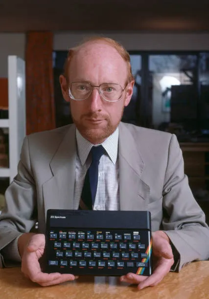
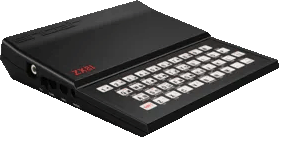
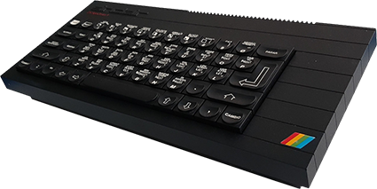
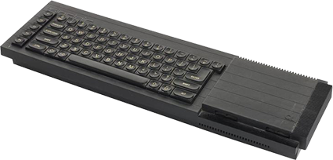

The Life of Clive
Adapted from The Sinclair Story, by Rodney Dale
Clive Marles Sinclair was born near Richmond in Surrey on 30 July 1940. His father and grandfather were both engineers.
Clive's brother Iain was born in 1943 and his sister Fiona 1947. The Sinclair children remember a particularly idyllic childhood. Clive came into his own in the holidays, for he loved swimming and boating and at an early age designed a submarine which owed as much to grandfather George's naval interests and Jules Verne as to the availability of government surplus fuel tanks.
Clive found the comparative freedom of holidays a necessary antidote to school; a time when he could pursue his own ideas and teach himself what he really wanted to know. A sensitive child with ways of thought and speech beyond his years, little interest in sports other than aquatic, he sometimes found himself out of joint with his schoolfellows.
He preferred the company of adults, and there were few places other than with his family where he could feel intellectual companionship. To some, the Sinclairs seemed to be unconventional, a family who spoke directly, frankly, and often argumentatively to one another as a matter of course - because not only was it more fun that way, but also, as Clive now says: 'You get more out of people by disagreeing with them.'
Clive went to Box Grove Preparatory School; he recalls it with affection, and was very upset when it was eventually closed. When he was ten, the school reported that it could teach him no more maths, and he moved on to the secondary phase of his education.
At about this time, his father suffered a severe financial setback. With Sinclair tenacity, he started from scratch - still in machine tools - and fought his way back in a remarkably short time. However, fighting one's way back is not without its effects on one's family, and Clive went to a number of schools for his secondary education. Taking his O-levels at Highgate School in 1955, and S-levels - in physics, and pure and applied maths - at St George's College, Weybridge.
Mathematics - that perfect, concise language - had always interested him deeply, and he had barely become a teenager when he designed a calculating machine programmed by punch cards. Because he wanted to make the adding as simple as possible, he did it all with 0s and 1s. 'I thought that was a great idea. I was really amazed to discover that this was a known system; the binary system. That discovery disappointed me deeply; I though I'd made my fortune ... but I was very pleased with the idea.'
As a teenager, he also 'discovered' electronics. He had always been fascinated by things miniature, and he carried this interest into his electronic designs, seeking to produce ever more refined and elegant circuits, using smaller and smaller components. The state of his bedroom - a mass of wires - was a family joke, but from it came amplifiers and radios for his family and close friends, and an electrical communications system for their hideouts in the woods.
He worked hard at school, particularly on subjects he was keen on, reading and absorbing far beyond the required level. If he wanted to learn something, he did so very readily; he had - and still has - an incredible facility for assimilating information. The converse it true; at school he had little time for subjects which did not interest him. While still at school he wrote his first article for Practical Wireless; it was published; heady stuff.
As an antidote for working hard, Clive and his friends were wont to hold wild teenage parties. A friend of his from a strict Catholic family recalls that one Christmas Eve, after a few drinks, he said to Clive: ' "I'm off to church; I've got to go because I'm in the choir", so Clive said he'd come along with me, and we staggered into the choir stalls and Clive just joined in with his fine bass voice. Not bad for an atheist!'
When he left school just before his eighteenth birthday, there was no reason why he should not have gone to university - except that he didn't want to. He knew from experience that what he wanted to learn he could find out himself.
C M Sinclair's Micro Kit Co was formalised in an exercise book dated 19 June 1958 - three weeks before the start of his A-levels. In this book we find a radio circuit, 'Model mark I' with a components list: 'cost/set 9:11d + coloured wire & solder/nuts & bolts + celluloid chassis (drilled) = 9/-'.
He had been delighted to find how cheap components were if bought in bulk, and that there were such things as call-off rates. He also realised that to sell big you had to look big, even if you weren't. Not for him ninepenny words and five-and-sixpenny lines; he would think in terms of half-page advertisements at the very least.
Half page advertisements and components by the thousand ... where was the money to come from? Why not write another article for Practical Wireless? The article was accepted, although it was not published until the following November - no instant cash there. But then he saw Practical Wireless advertising for an editorial assistant; he applied for the job and got it. He told his parents it was a holiday job. After a decent interval, he told them that in Practical Wireless thought very highly of him and that there were tremendous prospects there - none of which was true.
But as it turned out there were tremendous prospects because the magazine was run by an incredibly tiny staff: editor, assistant editor, and editorial assistant - Clive. The editor had to retire through illness and the assistant editor stepped into his shoes. He soon collapsed under the strain, and there was Clive Sinclair, at the age of 18, running Practical Wireless. He says that it was not a difficult job; all he had to do was to take the material from the regular contributors, look through the articles which poured in from hopeful amateurs, select enough for a well-balanced magazine, and give them an editorial polish. The day a week that editing PW took gave him plenty of time for further reading and circuit design. PW readers could not always get his published designs to work, but a design that didn't work always resulted in a large postbag.
A job which occupies an active mid for a fraction of the time lacks satisfaction. The Silver Jubilee Radio Show opened at Earl's court at the end of August 1958, and Sinclair was representing PW, on Stand 108, selling magazines and subscriptions, and still wondering how to launch his own business. Opposite, on Stand 126, was Bernard's Publishing.
Sinclair recalls: 'There I was on the Practical Wireless stand, when all of a sudden an immense figure loomed up. It was Bernard Babani; out of the corner of his mouth, best gangster fashion, he said; "See you at the coffee stall in ten minutes."' At the coffee stall, Babani offered Sinclair £700 a year to run his publishing company. 'Maybe,' was the murmured reply, 'but I expect a rise after a short time.'
At Bernard's, Clive Sinclair designed and sometimes built circuits, and Mr Singh did the drawings and prepared the artwork for printing the books. The secretary, Maggie, did everything else. Sinclair's mother had been dubious about her son leaving the security of a monthly magazine but Bernard Babani said to her: 'Mrs Sinclair, your son's name will be on all the books we publish.' Many a true word; 25 years later that storeroom which was Sinclair's office is stacked high with books about microcomputers - and you don't have to look hard for the name 'Sinclair' on the covers.
But his burning ambition was still to start his own business and in 1961 he had registered a company, Sinclair Radionics Ltd, on 25 July. He took his design for a miniature pocket transistor radio and spent some time seeking a backer for its production in kit form. He gave in his notice to Babani, only to find that his backer had developed cold feet.
He needed another job to earn some money - both to live and to finance the business he was determined to start. He had little difficulty in finding one; he joined United Trade Press - based at 9 Gough Square, just off Fleet Street - as technical editor of the journal Instrument Practice.
His name first appears in Instrument Practice as assistant editor in March 1962. He lost no time getting to work, and 'Transistor DC Chopper amplifiers' appears in two parts in May and June, followed by 'Silicon Planar Transistors in Hearing Aid Design'.
His last appearance as assistant editor was in April 1963, but the year he had spent marrying UTP to the semiconductor industry was of great mutual benefit. As a journalist he could approach all the semiconductor manufacturers and was welcomed with open arms.
One of the facets of Sinclair's genius lay in his ability to reduce the size of his designs. Although he had a sound grounding in theory, he was also very practical. He knew that manufacturers were selecting components to meet their published specifications, which left them with 'rejects'. These 'rejects' would obviously meet some specification; the art was to determine what that specification was. Having done that, he could design circuits in which components would perform perfectly well. Thus did he move from publishing to marketing.
The first intimation that the world had of the existence of Sinclair Radionics LTD was the half-page advertisement which appeared in the hobby magazines in November 1962. This was for the Sinclair Micro-amplifier, 'the smallest of its type in the world', which 'out-performs amplifiers twenty times as large'. There was a picture of the Micro-amplifier sitting on a halfcrown.
Sinclair set up his research, development and marketing organization in his office at Gough Square. However, the address given in the advertisements for Sinclair Radionics LTD was 69 Histon Road, Cambridge; here is some background. In 1958, I started a design and printing company called Polyhedron Services, and two years later had moved to 69 Histon Road and become involved in the development of Cambridge Consultants Ltd. CCL was founded in 1960 by Tim Eiloart, a Cambridge chemical engineer.
When CCL wanted to set up a workshop, I let them the disused bakehouse at 69 Histon Road. By this time, Tim Eiloart had met Clive Sinclair; Clive had just set up Sinclair Radionics and needed an organisation to receive his mail, assemble sets of components into kits, and dispatch them. It wasn't quite the high-tech work which CCL had envisaged but no matter; as the Sinclair advertisements appeared CCL was ready with the servicing organisation.
The half page Micro-amplifier advertisement was repeated in December 1962; and in January was expanded to a full page. Not knowing what was going on, I was somewhat surprised when we were asked to print a second batch of 1000 data sheets. The idea of 'stack it high and sell it cheap' by mail order was one with which we at Cambridge Consultants and Polyhedron were unfamiliar. 'He's either going to become a millionaire or go broke' we muttered to one another as the piles of mail mounted.
The next thing we knew at Polyhedron was a request for 1000 cards regretting that, owing to an unprecedented demand, there might be some delay in dispatching your Sinclair Slimline. This radio, the dream on which the original Sinclair Micro-Kit Co had been built, was announced in February 1963.
Sales were going from strength to strength; ideas for products were coming thick and fast. The CCL workshop was burgeoning, and the upper floor of the bakehouse was becoming somewhat overcrowded.

The ZX80
Sinclair's success had always been based on being first with products, often aimed at a market that didn't know it existed. By 1979 there was a well established 'personal computer' market. Commodore had launched its £700 PET home computer the previous year. Apple and Tandy were also well-known in the field. These machines were found variously in laboratories, and commercial and teaching establishments; not many people had a computer at home.
Sinclair decided that he would have to offer a product with all the essential features but at a greatly reduced price. In May 1979 the Financial Times predicted: "Personal computers will become steadily cheaper and their price could drop to around £100 within five years." Typically, Sinclair decided to do it in a few months!
The ZX80 - the world's smallest and cheapest computer - was launched at an exhibition in Wembley at the end of January 1980. It measured 9" x 7" and cost £99.95, or £79 in kit form.
In order to keep the price low the designers had to introduce some radical ideas to reduce vastly the number of components. The biggest saving was the use of a domestic television set as a screen and a cassette player as a program and data store. The machine had a Z80A microprocessor which was supplied by Nippon Electric; a large ROM, which contained a 4K-byte specially written Basic interpreter, the character set and monitor; and the interfacing circuitry.
The ZX80 was very much aimed at the person in the street wanting to know something about programming computers. Sinclair was convinced that people could be persuaded to buy the ZX80 but how to persuade them was the problem. The image of the computer at that time was somewhat Big Brother; clinical, air-conditioned surroundings; huge cabinets with reels of magnetic tape whirring to and fro. How would people relate such a frightening piece of equipment to the ZX80? Why would they want to buy it for the home? Why would they want to buy it at all?
No one need have worried. The ZX80 was an immediate success; ten orders were pieced at the exhibition in the first five minutes. The office in King's Parade was suddenly inundated with cheques; the switchboard was permanently jammed. Nobody had expected quite such a response and there was total chaos. Clive's immediate problem was to ensure that the company could cope efficiently both with the administration, and with the production of the ZX80.
Sinclair wanted to sell the ZX80 in the United States, although he did not expect to find an enormous market there because of the strength of the competition in the home computer field. However, a few weeks before the launch of the ZX80 in the UK he took it to the Las Vegas Consumer Electronics Show, and at the same time met Nigel Searle in Boston. Within a few days Searle had a new job, a new apartment and an office in Boston. He sold the ZX80 and later the ZX81 in the States from that office by mail order until early 1982.
Sinclair Research expanded rapidly; by September 1980, over 20,000 ZX80s had been sold. Clive Sinclair was determined to keep the company to a manageable size, he was all too aware of the need to try to learn from previous mistakes. Bringing manufacturing in-house in the days of Sinclair Radionics had seemed an excellent idea at the time, but the number of people they had had to make redundant had hurt him deeply.
By this time there were 12 employees at the King's Parade offices in Cambridge, six engineers still working at The Mill in St Ives, and Nigel Searle in Boston. To make sure that the company didn't grow too fast Sinclair had subcontracted all manufacturing. To begin with, production was done locally in St Ives by Tek Electronics. Components were generally of a much higher standard than they had been during the Black Watch fiasco, so there was less reason to manufacture products in-house. Eventually, as more and more were produced, the computers were made by Timex in Dundee; it is a testimony to all concerned that the return rate on the ZX80 was only one per cent.
Although the machine was so popular and sold so well, this was largely because it had no competitors. In fact it did have some drawbacks such as the lack of floating point arithmetic, a capacity of only five digits and an inability to handle separate files on its cassettes. The touch-sensitive - or sometimes touch-insensitive - keyboard was unpopular with users too. But in spite of those shortcomings, the ZX80 had opened a new market sector which exceeded Sinclair's wildest dreams, so who was going to complain too loudly? In September 1980, the company launched a 16K RAM pack - an extra plug-in memory - to attach to the edge-connector at the back of the machine. There will be many who remember the well-known RAM pack problem whereby a slight breeze could upset the connection and an evening's work would be lost. Thank heavens for Blu-Tack.

The ZX81
The ZX81 was launched in March 1981. It contained a new chip, designed by Sinclair Research and manufactured by Ferranti - the world leader in uncommitted logic arrays - standard chips which can be adapted to a user's requirements at the last stage of production. The new chip replaced 18 chips in the ZX80 and the machine now retailed at £69.95 or £49.95 in kit form. Sinclair also offered an add-on ROM to convert the ZX80 to the ZX81.
The ZX81 had a floating decimal point and scientific functions. It came in a sturdy black case and, if you used a colour TV, would produce black characters on a restful green background. It was a vast improvement on the ZX80. Sinclair also announced that he would be launching a small printer to work with the ZX81 later in the year.
Now that he had an improved machine and the promise of a printer, Sinclair decided to fight back at the government's scheme by offering his own half-price deal. Schools could buy a package of a ZX81 and a 16K RAM pack for £60; and he further promised that they would be able to buy the ZX Printer at half price when it was launched. That made the total cost of a system £90, while under the government scheme the minimum a school could pay if it bought an 'approved system' was £130. About 2300 schools purchased the Sinclair package.
The ZX81 received a very sympathetic review from David Tebbutt in Personal Computer World in which he keeps referring to 'Uncle Clive'. On the other hand: "Sinclair has been a bit cheeky in his advertisements. Under a column entitled 'New, improved features', he proceeds to mention three things that were included in the ZX80 when it was launched over a year ago!" The ZX Printer was eventually launched in November 1981 at £49.95. Designed for the ZX81, it could also be used with the ZX80 with an 8K ROM. It was a very compact little printer using a special metallised paper, and would print 32 characters to a line.
The market gradually expanded. In March 1981 Mitsui approached Sinclair Research and towards the end of the year was granted exclusive distribution rights for the ZX81 in Japan. Mitsui was one of Japan's main importers of British goods, the range including Jaguar cars and Burberry raincoats. They planned to market the ZX81 by mail order at about £90 and aimed at selling 20,000 computers during the first year; there were no competitors.
By the end of January 1982, 300,000 ZX81s had been sold worldwide. In the USA Sinclair was selling 15,000 personal computers a month by mail order; American Express was selling thousands to a potential ten million customers. Then Timex was granted a licence to market both current and future Sinclair personal computer products in the US from mid-1982. They paid Sinclair a five per cent royalty for sales and bought the right to use the Sinclair name in the US.
In Britain, Sinclair signed an agreement to sell the ZX81 through the branching-out stationers and booksellers, mindful of the ways in which the home computer created jobs. By February 1982 production of ZX81s was running at about half a million machines a year and the company had a turnover of £30M compared to £4.65M in the year ended March 1981.
One of the interesting side-effects of the ZX80 and ZX81 was the number of cottage industries that sprang up because of them, producing software, peripherals and publications. A ZX80 Users' Club had been formed before the ZX81 was launched; SYNC Magazine appeared in January 1981 to cater for ZX81 users; Learning Basic with your Sinclair ZX80 by Robin Norman, published by Newnes in early 1981, was one of the first books to develop Basic programming techniques on the home computer.
Hundreds of small operations started to sell programs, books, extra memory, printers, sound generators and add-on keyboards for use with the ZX81. In January 1982 one Mike Johnston organised a fair for companies selling products for the Sinclair computers. Nearly 10,000 people turned up at Central Hall, Westminster, which has a capacity for only a few hundred; the police had to be called to control the crowds; 70 exhibitors took huge sums of money.
Both the ZX80 and ZX81 had been produced as learning machines, for the person wanting to find out about computer programming. Once people knew what they were doing they wanted a more powerful machine, and at first they had to turn to manufacturers other than Sinclair Research to find them.

The ZX Spectrum
Sinclair's philosophy - at least in retrospect - was to prepare the world for universal computer ownership in easy stages. Over 50,000 ZX80s had been sold, and more than six times as many ZX81s. As the market matured, the engineers were working away at the ZX82 (codename) which was launched as the ZX Spectrum in April 1982. The hardware was designed by Richard Altwasser, who later formed his own company, Cantab, and fell by the wayside in an attempt to market a computer called the Jupiter Ace.
The Spectrum came in two versions: the 16K sold for £125 and the 48K for £175. For those who preferred to work up in easy stages, an extra pack to increase the memory of the cheaper machine was available for £60.
In many ways the Spectrum was altogether a 'better' machine than either the ZX80 or ZX81, although some said its predecessor the ZX81 was superior when it came to finding out how computers actually work. Its chief advantages over the ZX81 were 'eight-colour graphics capability, sound generator, high-resolution graphics [smaller dots on the screen] and many other features, including the facility to support separate data files.'
At last, Sinclair Research was notionally able to compete with the BBC Micro and other personal computers; the figures in the table published in the ZX Spectrum leaflet were impressive. The ZX81 had been competing against the Acorn Atom; it could never have stood up against the BBC model A, the current Acorn competitor when the Spectrum came out. The Spectrum had a more versatile Sinclair Basic than the previous two machines; an improved keyboard replaced the unpopular - though cheap - touch-sensitive keyboard; it was able to generate and display 49,152 pixels in 8 colours. The keyboard was a rubber pad over a ZX81-type membrane keyboard, and which had a most peculiar feel to it.
The Spectrum was the cheapest home computer to produce colour graphics but the reviewer complained of the lack of facilities and 'found that the borders tend to wriggle in an irritating way'. It also had a small built-in loudspeaker which generated bleeps 'acceptable for games, but not much more'. And that, to Sinclair's disappointment, was about all the Spectrum was generally used for.
The tone of the review was set in the first paragraph:
"After using it, however, I find Sinclair's claim that it is the most powerful computer under £500 unsustainable. Compared to more powerful machines, it is slow, its colour graphics are disappointing, its Basic limited and its keyboard confusing."
The low cost of the Spectrum meant that parents were prepared to buy them to give their children 'a good start in life'.
The place of the computer in the home was reinforced by the meagre provision in schools, where there was often only one machine between 30 pupils and thus insufficient opportunity for everyone to practise. What better solution than a computer at home?
But Sinclair observed another dimension: "The interesting thing is that as well as children being expert at programming, there is another expert group taking to it like ducks to water - retired people. The concept of it being peculiarly suitable to the young mind is perhaps wrong - it's the mind that's free of everyday burdens. The retired person with some time to spare can take to it wonderfully and it's giving a lot of people a new interest in life."
The Spectrum was capable of playing very sophisticated games and there were companies starting up solely to produce them - often run by very young people who had learnt programming at school or from magazines.
In February 1983, WH Smith, who had been the Spectrum's biggest distributor, was joined by Boots, Currys, Greens - Debenham's in-store subsidiary - and John Menzies as Sinclair pioneered a change in the High Street. Many other stores such as John Lewis and the House of Fraser were supplied by Sinclair's UK distributor, Prism Micros. 200,000 Spectrums had now been sold by mail order, and by Easter 12-15,000 Spectrums were being sold per week in the UK. The Spectrum had also been launched in more than 30 countries worldwide.
You couldn't walk into WH Smith on a Saturday without being faced with shelves of software and mobiles and whizz-kids playing on the computers. What sort of computer you had became an important factor in playground status. Sinclair was working his purpose out; the Spectrum was a bestseller in the home computer market, and he was achieving his object - to familiarise the world at large with the joys of computing via the home computer.

The QL
Before long, plans were being laid for a new machine whose working name was the ZX83. It would be aimed at a specific gap in the now-educated market - the business user about to embark on computing. This was a market potentially ten times as big as that for home computing, so it was well worth pursuing. In 1984, a simple business installation cost at least £2000; more with a quality printer and a range of software. Sinclair's aim was to bring down the price of a notionally comparable system so that a whole stratum of potentially interested users would be able to justify the expense.
As 1983 drew to a close, work on the ZX83 (or would it be the ZX84?) became more and more frantic. What was the machine going to be called? Suggestions were invited from within the Sinclair organisation, perhaps the most memorable being, in honour of Sinclair's favourite colour and recent honour, the Black Knight. One day my telephone rang; it was Alison Maguire, software manager:
'We've got a name for the new computer.'
'Yes, what?'
'Hold on, I'll just shut the door . . . It's Quantum Leap, QL for short.'
The launch date of the QL was fixed for 12 January 1984. That it was far too early a date is now well known, but just who realised that at the time when it was fixed is unclear. But perhaps one of the most powerful reasons for making the, announcement was that it seemed as though the competition were aiming at the same gap in the market (the low-priced business computer) - IBM with its PC, Apple with its Macintosh, Commodore with its 264 and, last but by no means least, Acorn with its Business Machine.
The launch at the Inter-Continental Hotel, Hyde Park Corner, was spectacular: either the name of Sinclair, or the promise of breakfast, was such that some computer journals sent the entire staff to find out what was going on. By 10.30 everyone had trooped into the conference room and Nigel Searle introduced Clive Sinclair, who described how the QL had come into being, and unlocked the secret that QL meant quantum leap. 'Many of its advanced capabilities, such as multi-tasking and multi-window display, are normally only available on machines costing several thousand pounds' he said. The launch was nothing if not lavish; everyone left the hotel clutching extremely glossy brochures and copies of the QL manual - almost as good as having a QL.
Generally rave reviews began to appear in the technical press. Soon, everyone had heard of the QL and orders began to pour in. Deliveries did not, however, begin to pour out. Even before the end of February, it was clear that the company would not be able to dispatch QLs 'within 28 days' as promised.
At first, people were prepared to make allowances - Sinclair products were often a little slow off the mark, but when they arrived they were well worth waiting for. At the beginning of March Sinclair announced that deliveries of the QL would start in 'April.' By the end of May, the company had received over £5M for 13,000 machines, but had only been able to deliver a few hundred. In July, the company announced that the QL computer and flatscreen TV would go retail in September.
The machines that were slowly being delivered were still in effect under development, and contained gradually improving versions of the felicitously-named QDOS operating system (the system that orchestrates the computer's working). All of this was like wearing a coat with the tailor inside finishing it off. It turned out that QDOS was twice as big as the operating system on the Spectrum, and four times as complex, and that trying to produce QDOS in twelve months had been but a pious hope. One of the oddities that people couldn't help noticing was the EPROM chip 'exposed to the elements sticking out of the back of the casing' which gave - not unnaturally - the impression that the machine was not properly finished.
The prolonged wait suffered by thousands of expectant customers, the temporary expedient with EPROMs, the changing versions of QDOS, the consequent modifications to software, and the multiple problems with the Microdrive all raised fundamental questions about Sinclair's design philosophy and marketing practice.
At the launch in January 1984, Clive spoke of QL production building up to 100,000 per month. In fact, fewer than 60,000 machines were sold in that first year.
Sinclair's adamant refusal to produce games software for the QL, on the mistaken principle that it would make it look like a games machine, must have played its part in dissuading potential customers. Even the lower-budget end of the business sector is likely to be looking for reasons - or excuses - to buy its first computer and the idea that it will appeal to all the family can be a powerful purse-opener.